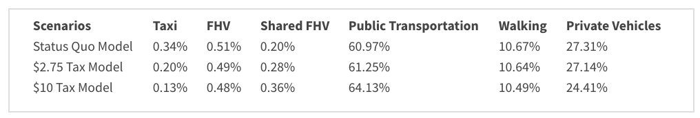
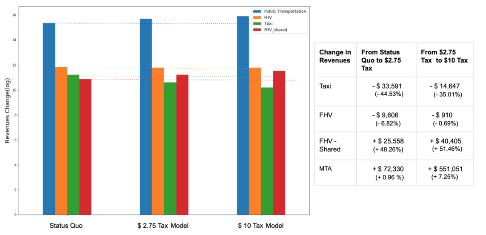
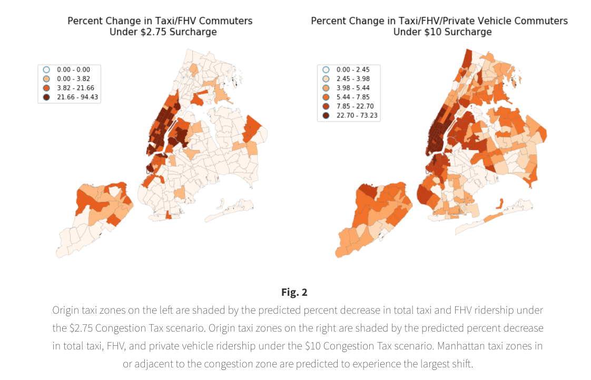
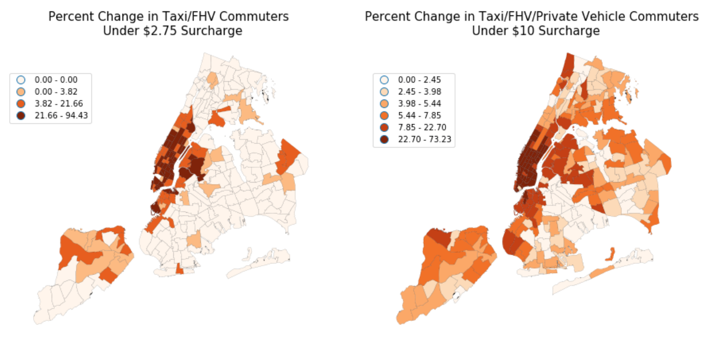
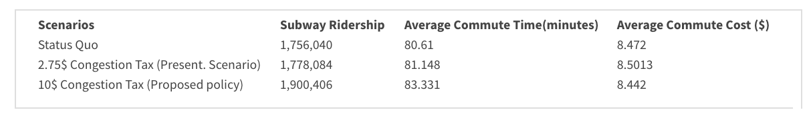
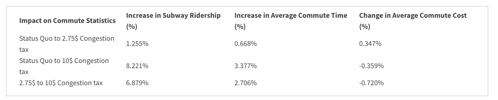
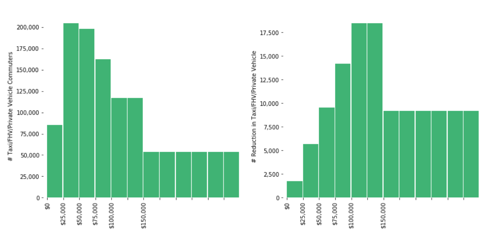
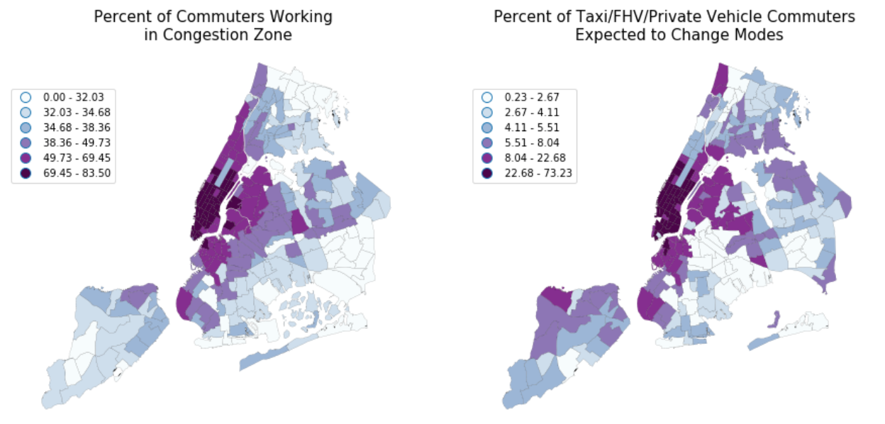
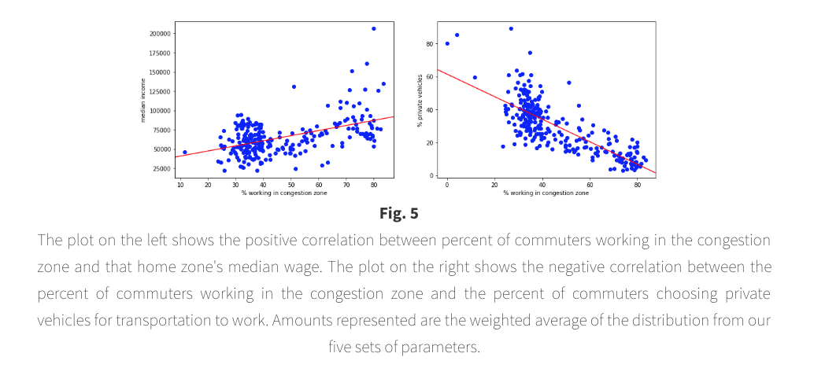
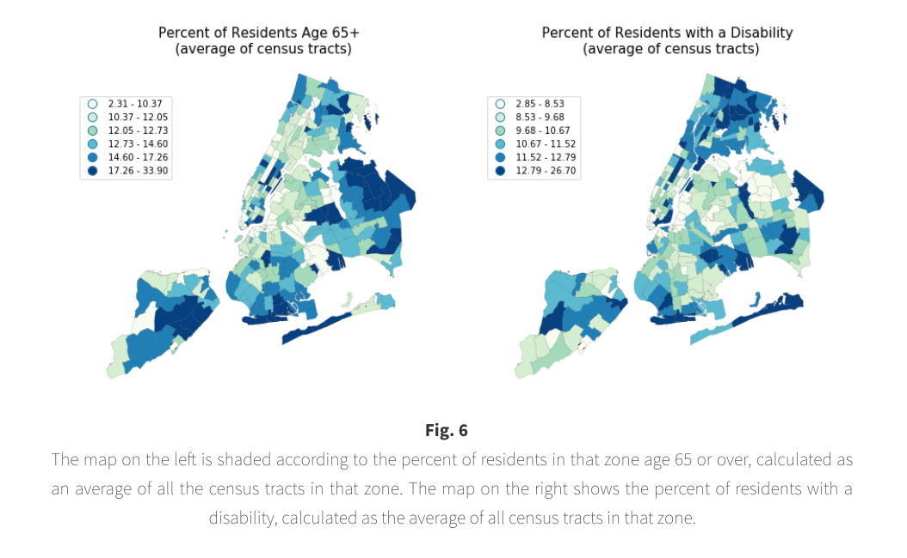

—— Mode shift under each scenario ——

Table 2
This table shows a distribution view of the scaled results of our model simulations.
Numbers represent the proportion of total NYC commute trips for each mode predicted under
each scenario. Specifically, an overall 0.16% drop (about 4,700 trips) in Taxi and (non-shared)
FHV trips during the daily morning commute hours under the $2.75 tax, and an overall 0.08% drop
(about 23,000 trips) under the $10 tax. The private vehicle trips decrease 0.17% (about 4,800 trips)
under the $2.75 tax and 2.73% (about 80,000 trips) under $10 tax. In contrast, shared FHV trips,
Public Transportation trips, and Walking trips increase in both scenarios.
Based on the means and the standard deviations of our models,
the uncertainties of the proportions are as follows: Taxi±0.05%, FHV±0.14%, Shared FHV±0.19%,
Public Transportation±0.23%, Walking±0.05%, Private Vehicles±0.14%.
—— Anticipated impact on
MTA, taxi, FHV revenues, and Tax revenues ——

Figure 1
The distribution of the revenues for the four transportation modes under different
price scenarios, along with the actual amount change displayed in the table.This
bar chart on the left shows the change in revenues for Public Transportation
(MTA), Taxi, FHV, and Shared-FHV under each price scenario. Corresponding to the
mode shift, there are predicted a reduction in Taxi and (non-shared) FHV revenues
under both Congestion Pricing Scenarios, and an increase in Shared- FHV and MTA revenues.
The table on the right displays the actual amount of change in dollars between scenarios
with the corresponding percentage. Taxi revenue has the biggest percentage drop (about 40%)
each time, and MTA has the greatest growth in number (about $72,000 and $551,000).
Non-shared FHV has a slight decrease in revenues under each price scenario, however,
the increase in shared FHV (about 50% each time) can easily cover that loses and creates
extra profits for the total FHV revenue (the overall FHV revenue increases $15,952 from
status quo to $2.75 tax and $39,495 from $2.75 to $10 tax). The variances in the
revenue amount for each mode are as follows: Taxi ±$8,500 FHV ±$1,700,
Shared FHV±$20,000, Public Transportation±$13,000.

Table 3
The Tax Revenue from the Congestion Surcharge under each scenario. The predicted
tax revenue is compared with a "zero scenario" revenue —— the expected revenue
if the surcharge were imposed and no commuters change their mode choice behaviors.
The results show that both of the predicted revenues after the mode shift in
scenario 2 and 3 are about 50% lower than the zero scenario revenues.
This indicates the advantage of our methodology, as the use of a mode shift model
provides a more realistic prediction of future revenues, as it accounts for behavior
changes resulting from the tax. Policy makers using the zero scenario might vastly
over-estimate surcharge tax revenues.The uncertainties of the predicted revenues are ± $5,000
under $2.75 Tax scenario and ± $22,000 in $10 Tax scenario.

Figure 2
Origin taxi zones on the left are shaded by the predicted percent decrease in total
taxi and FHV ridership under the $2.75 Congestion Tax scenario. Origin taxi
zones on the right are shaded by the predicted percent decrease in total taxi,
FHV, and private vehicle ridership under the $10 Congestion Tax scenario. Manhattan
taxi zones in or adjacent to the congestion zone are predicted to experience the
largest shift. All of the 37 origin taxi zones that the model predicts will experience
the most mode shift under the $10 Congestion Tax (predicted change is more than 28.57%,
which is one standard deviation above the mean predicted change) are in Manhattan. The
geographic range of impact is much larger in Scenario 3 ($10 surcharge).
Our model did not assume any exemptions for residents of the congestion zones,
and our results suggest that decisions around those exemptions may significantly
affect the impacts of the policy.
—— Anticipated daily impact on
commuter time and expenses ——

Table 4
This table shows the subway ridership and the impact on average commute time and cost
under the 2 congestion surcharge scenarios. These are derived from the mean values of the
distribution created by running 5 sets of parameters with percentage variance.
We can see an increase in the ridership and commute time but, the cost remains somewhat similar.

Table 5
This table shows the percentage changes in subway ridership average commute time and cost
under the 2 congestion surcharge scenarios. These are derived from the mean values of the
distribution created by running 5 sets of parameters with percentage variance as. We can see
a noticeable increase in the ridership and commute time but, the change
in the cost is relatively insignifican.
As seen in table 4 and table 5, the subway ridership and the commute time increased for
both the scenarios but, the change is more significant for the $10 Congestion Tax Scenario.
So, we can see that the average commuter will spend not only more time on their commute
but will also, most likely, have to commute in more crowded subway cars. Also, an interesting
impact seen here is that the commute cost increases slightly in the $2.75 congestion tax scenario
in contrast to it reducing in the $10 scenario. This is because the model predicted that most
of the taxi and FHV commuters simply switched to either shared FHVs or stuck to their mode of
choice and just paid the surcharge instead of shifting to the subway which dramatically cut
the cost which makes sense too as people are usually very reluctant to change their
transportation mode
.
—— Anticipated environmental impact ——
The earlier cited work of Gibson, et. al provides a framework for us to quantitatively evaluate
the predicted environmental impacts of the surcharge scenarios. They found that for every daily
vehicle reduction emissions would be reduced by .00006552 microgram/meter cubed. They then
presented a framework for quantifying the economic benefit of this emissions reduction. They cite
1984 US government research that estimated that people were willing to pay $148.70 ($366.59 in 2019)
per year per person for every microgram/cubic meter reduction in pollution. If we assume that
every 60 miles (during the 6 am to 10 am morning commute window) in driving distance represents
one vehicle (conservatively assuming a constant 15 miles per hour), we can estimate the number
of vehicles reduced. From this framework we predict a very small reduction of 13 cars per commute
window under the $2.75 surcharge scenario and a reduction of 9,045 cars during the morning commute
under the $10 scenario. This includes total mileage reduction from taxis, FHVs and private
vehicles and accounts for the additional miles from the predicted increase in shared FHVs.
Under scenario 3 the framework presented by Gibson, et.al would predict a daily reduction of
approximately 0.6 micrograms/meters cubed for a 219 microgram/meters cubed yearly reduction of
harmful pollutants attributed to the morning commute hours. If we multiply that total by the
$366.59 per year a person is willing to pay for a reduction in unit of pollutants, we get a
yearly value of $80,348.91 per person impacted. Applied to the approximately 1.3 million
people living in Manhattan's congestion zone, the reductions environmental benefits are
significant. Notable from Gibson, et. al. was their finding that air quality benefits expanded
beyond the congestion zone, suggesting an even larger range of environmental benefit is possible.
—— Equity evaluatio ——

Figure 3
The plot on the left shows total commuters by income that report using taxi, FHV, shared FHV
or private vehicles to commute to work. The plot on the right shows the expected net
reduction of Taxi, FHV, shared FHV and private vehicles predicted under Scenario 3 - $10
congestion surcharge - by income bracket. ACS income brackets are not evenly spaced, so
the numbers in each bracket were either summed or divided in order to create a perceptually
uniform plot, with each bar representing an income range of $25,000. In order to evaluate any
potential equity or accessibility concerns with the existing or
proposed congestion tax, the model's predicted mode shift segmented by wage
bracket are compared. Figure 3 plots the predicted net reduction (right) in vehicle commutes
from the baseline Scenario 1 to Scenario 3 - the proposed $10 surcharge - by income
bracket, as well as the total number of vehicle commuters in Scenario 1 (left). Many vehicle-based
commuters make fewer than $100,000 per year, suggesting potential for a congestion surcharge to
weigh heavily on the middle class. However, when plotting predicted mode shift as a result of the
surcharge, the surcharge appears to be a relative progressive tax, with the majority of the
mode shift experienced by people making over $75,000 per year.

Figure 4
The figure on the left shows the percent of taxi zone residents who work in the congestion
zone (shaded by home taxi zone). The figure on the right shows the percent of all taxi,
FHV, shared FHV and private vehicle commuters expected to shift modes due to the $10 surcharge.
Both figures reference the "Scenario 3" congestion surcharge of $10. The congestion zone
referenced is the corresponding zone, Manhattan below 60th st.. When comparing the two plots
in Figure 4, a higher percent of commuters working in the congestion zone is associated with
a higher percent of vehicle commuters predicted to change modes. This makes sense as commuters
not living or working in the congestion zone will not be affected by the surcharge during their
workday commutes. This dynamic may explain why we predict that commuters impacted by the surcharge will skew higher income.

Figure 5
The plot on the left shows the positive correlation between percent of commuters
working in the congestion zone and that home zone's median wage. The plot on the right shows
the negative correlation between the percent of commuters working in the congestion zone and
the percent of commuters choosing private vehicles for transportation to work. As shown in figure 5
The percent of people working in the congestions zone is associated with a higher median
income at the taxi zone level. Additionally, the percent of people working in the congestion
zone is associated with a lower percentage of people in that zone reporting private vehicles as
their transportation choice, suggesting that many private vehicle commuters may not work in
the congestion zone, and may not be impacted by the surcharge on their daily commutes.

Figure 6
To explore accessibility concerns, the map on the left is shaded according to the percent of residents in that zone age 65
or over, calculated as an average of all the census tracts in that zone. The map on the
right shows the percent of residents with a disability, calculated as the average of all
census tracts in that zone.
Figure 6 has been included to show the distribution of residents over the age of 65
or with a disability. While our model estimates mode choice based on a trade off between time
and cost, these populations may have additional concerns that might prevent them from switching
modes, particularly to public transportation, even if a surcharge made their vehicle-based
commute prohibitively expensive. While the final details of the proposed $10 surcharge are
not yet available, most news accounts report that there will be an exemption or discount for
populations with accessibility concerns, particularly for those living in the congestion zone.